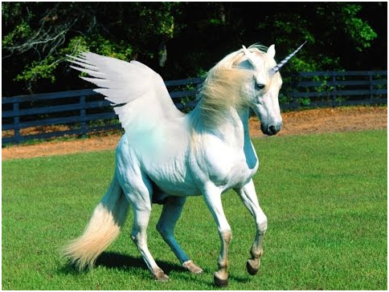

Home
Anatomy
Unicorn Fan Site Home page

Welcome to the Unicorn factoid universe
Our purpose is to help educate schoolchildren about these majestic beasts. Here you can get all your major facts and information about these wonderous creatures.